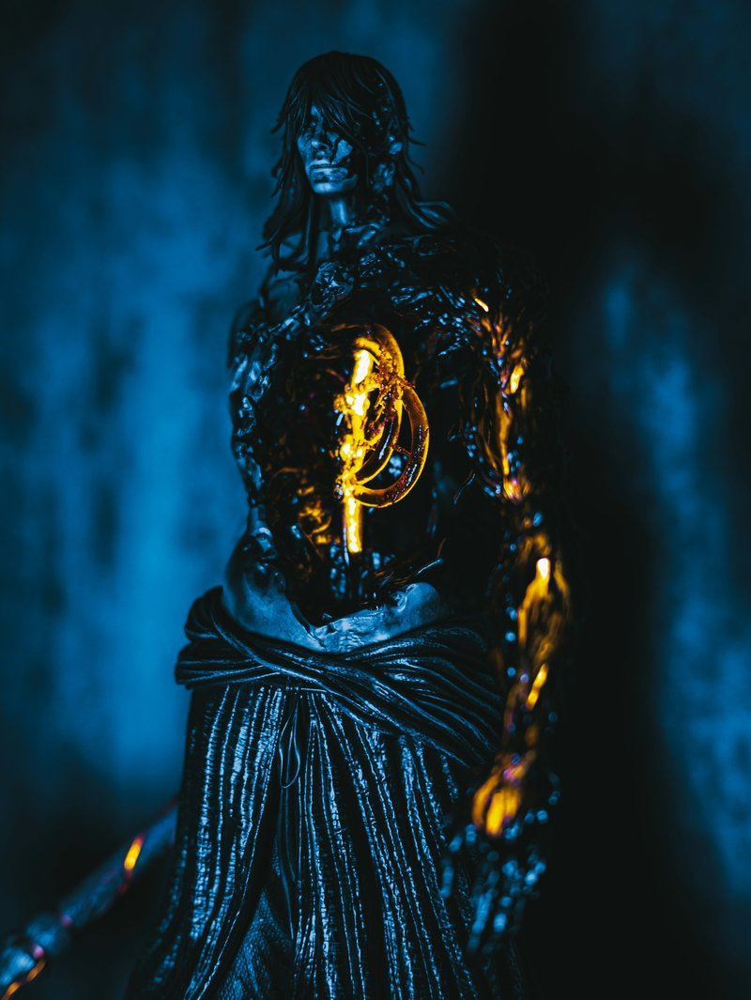
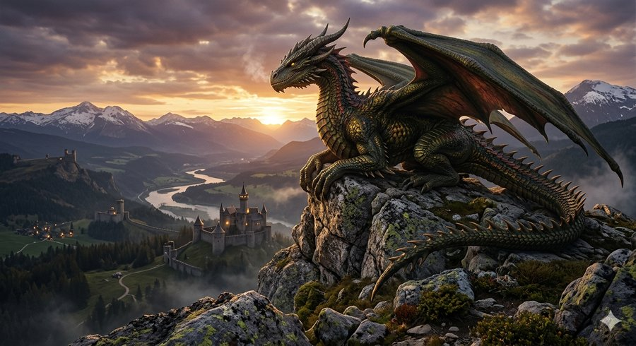
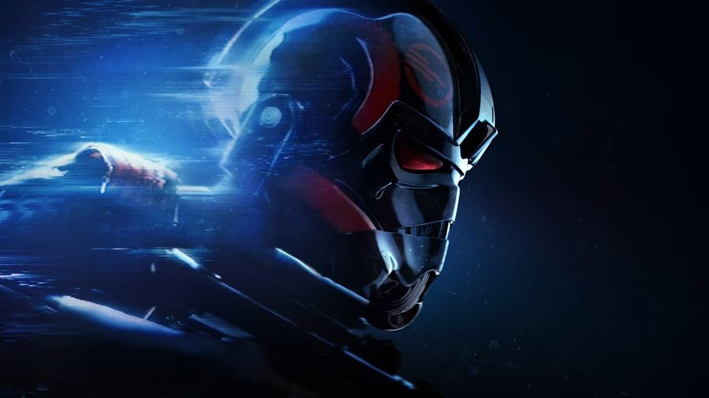
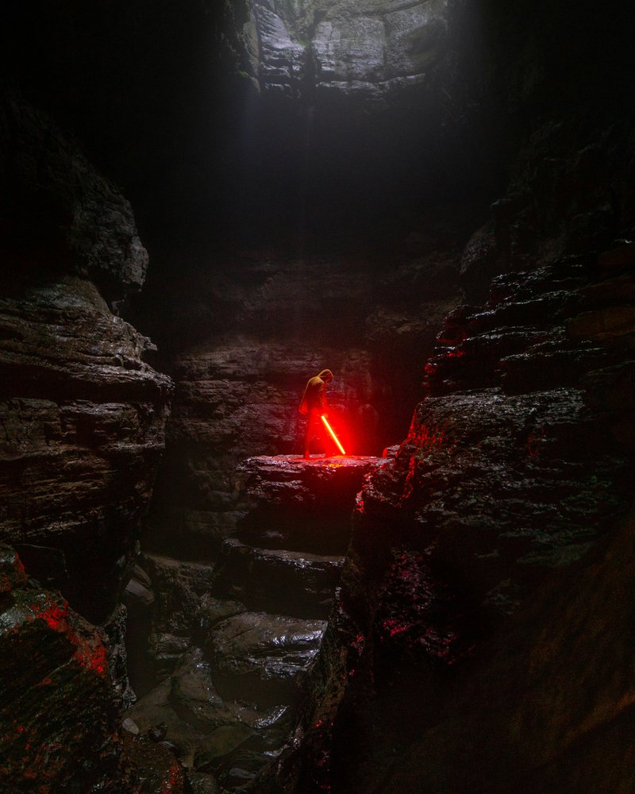

The Games I Love
Ive played a lot of games but there are a few thst really stick out as my favorites. I love fantasy games. Chances are if I can run around and wack stuff with a sword I will be having a good time. I also love Staw-Wars games. theres single player games like Jedi Fallen order and shooters like Battlefront 2 that are just a blast.
Elden Ring

Eldern ring is a fantasy Game set in a broken world. You are an undead adventurer trying exploring the world and defeating bosses to continue our journey.
Baldurs Gate 3

Baldurs Gate 3 is a roll playing game set in a mid-evil fantasy world. You make a character and are part of an enthralling story filled with action romance and heart break. the mechanics of the game are the same as Dungeons and Drgons so I already loved the system but it also boasts one of the best stories in a games I've ever played.
Star-Wars Battlefront 2

Battlefront 2 is the game I have probably played the most. its certainly the game Ive been playing the longest. It is a Star-Wars based first person shooter. I Love it because of the variety of different heroes and weapon load ous that you can use and play as in the game.
Jedi Fallen Order

Jedi Fallen Order is a single player action rpg where you play as Kal Kestis a Jei padawan that survived order 66. I love the Lightsaber combat in this game. It is imersive and so incredible. Its one of the only games that I have 100% completed. I have been to every place collected every item and collectable and fought every enemy.It realy is a fantastic experience.